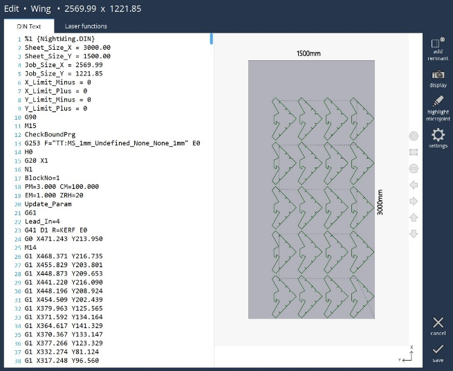
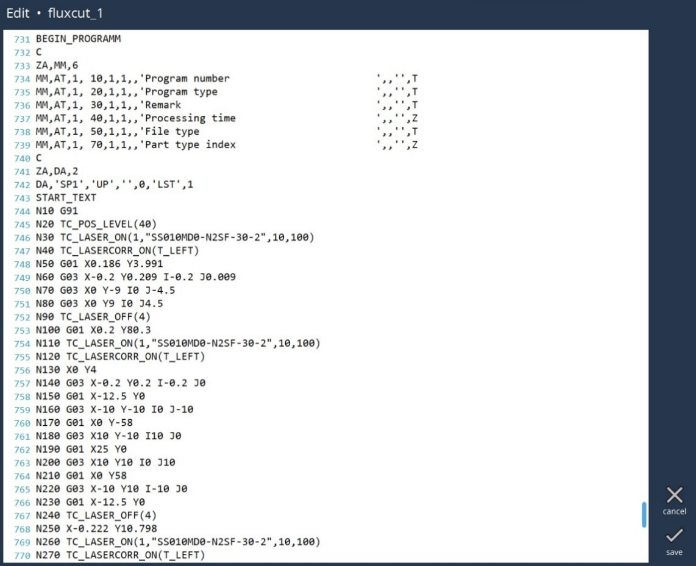
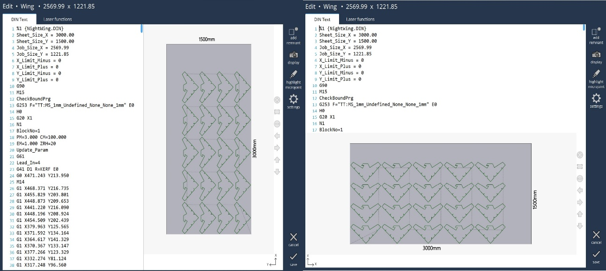

Edit NC Code
With TJSCut-90 you have full control over your NC Code either by menu buttons or edit the text directly. Select the program you want to edit and then press the edit button.
Edit page

-
Add/Delete remnant : Selecting this option will create a remnant sheet. It is also possible to delete remnant by selecting the same option when remnant is already created.
-
Display : User can turn ON or OFF the sheet or machine display.
-
Highlight Microjoint : User can quickly confirm if the required contours are equipped with microjoint or not. Selecting this option highlights the microjoint in the drawing.
-
Settings : User can configure the distance which allows to add remnant.
-
Cancel : It will close the dialog and go back to the programs page without saving the changes.
-
Save : This option saves the changes made by the user.
Select the LST program you want to edit and then press save button. This brings the edit page where user can make the necessary changes to the program. In the LST text page, we can make changes to the NC code. The find Ctrl+F and replace Ctrl+H options of a text editor are available.

Orientation
This page shows the program name and dimension at the top. User can change the orientation in which the program should be displayed (portrait or landscape) in machine settings.
